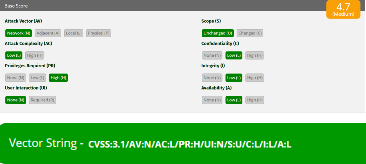
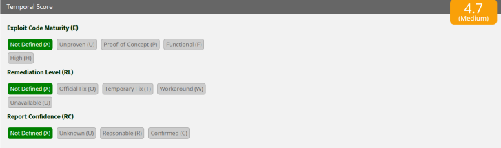
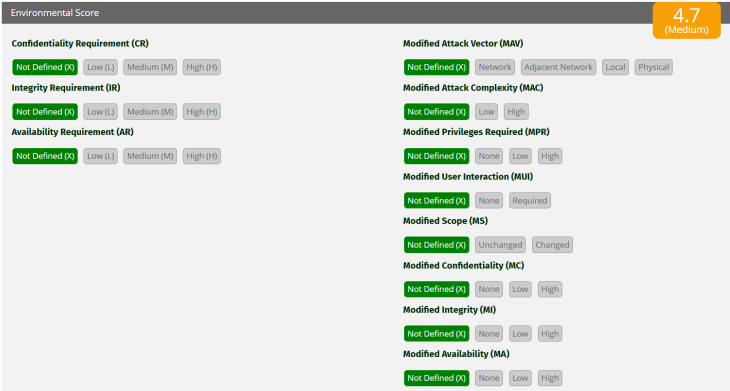

Materia: Seguridad Informática | Semestre: 8º |
Fecha: 15 de mayo de 2026 | Tema:Evaluación de vulnerabilidades con CVSS 3.1
Integrantes:
- América Fabiola Guerra Ramírez - 179884
- Bruno Axel Puente Luna - 177876
- Laura Ivon Montelongo Martinez - 177291
- Gustavo Michael Larios Guerra - 178318
- Carol Elizabeth Cortes Beltran - 177203
- Benites Rangel Cesar Yahir - 179091
- Cristian Alejandro Rodriguez Moreno - 181641
Con base en el escenario proporcionado:

Imagen 1: Configuración Base Score CVSS 3.1.

Imagen 2: Vector String CVSS v3.1.

Imagen 3: Environmental Score CVSS.
Aunque esta vulnerabilidad necesita privilegios elevados para poder explotarse, sigue siendo importante debido a que un atacante con acceso administrativo o permisos avanzados podría utilizarla para afectar aún más los sistemas internos de la organización.
Este tipo de fallas representa un riesgo especialmente en situaciones donde existen cuentas comprometidas, amenazas internas o procesos previos de escalamiento de privilegios.
Quienes podrían aprovecharla serían principalmente usuarios internos malintencionados, administradores comprometidos o atacantes externos que hayan conseguido credenciales privilegiadas mediante técnicas como phishing, filtración de información o ataques de fuerza bruta.
Aunque el impacto en la confidencialidad, integridad y disponibilidad es bajo, esto únicamente indica que no ocasiona daños críticos ni pérdida total de información; aun así, puede generar accesos parciales a datos, cambios menores en el sistema o interrupciones limitadas del servicio, por lo que continúa siendo una vulnerabilidad que requiere atención y mitigación.
Usando la calculadora oficial CVSS v3.1:
El vector:
CVSS:3.1/AV:N/AC:L/PR:H/UI:N/S:U/C:L/I:L/A:L
produce la siguiente puntuación:
4.7
Media
Porque según CVSS v3.1:
La vulnerabilidad analizada alcanzó una puntuación de 4.7 en CVSS v3.1, por lo que se considera de nivel medio.
A pesar de que para explotarla se requieren privilegios elevados, sigue representando un riesgo importante, ya que podría ser utilizada por usuarios internos maliciosos o por atacantes que hayan obtenido acceso a cuentas privilegiadas.
Asimismo, el hecho de que pueda explotarse remotamente y con baja complejidad técnica aumenta su importancia dentro de la infraestructura de una organización.
Aunque las afectaciones en confidencialidad, integridad y disponibilidad son bajas y no implican un daño crítico al sistema, es recomendable implementar controles de seguridad, supervisión de cuentas con altos privilegios y estrategias de mitigación que ayuden a disminuir la probabilidad de explotación.